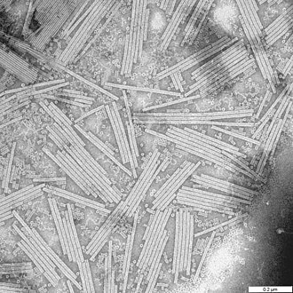

Orígenes de la biología molecular
Tras el ascenso de la genética clásica, muchos biólogos, —incluyendo una nueva ola de físicos en la biología— persiguieron la interrogante del gen y su naturaleza física. Warren Weaver, jefe de la división científica de la Fundación Rockefeller, distribuyó subvenciones para promover la investigación que aplicara los métodos de la física y la química a los problemas biológicos básicos, acuñando el término de biología molecular para este enfoque en 1938, muchos de los avances biológicos significativos de las décadas de 1930 y 1940 fueron financiados por la Fundación Rockefeller.
Como en la bioquímica, la superposición de las disciplinas de la bacteriología y la virología (más tarde combinadas como microbiología), situadas entre la ciencia y la medicina, se desarrolló rápidamente en el siglo xx. El aislamiento del bacteriófago por Félix d'Herelle durante la Primera Guerra Mundial inició una larga línea de investigación que se centró en los virus bacteriófagos y las bacterias que infectan.
El desarrollo del estándar, organismos genéticamente uniformes que pudieran producir resultados experimentales repetibles, fue esencial para el desarrollo de la genética molecular. Después de los primeros trabajos con la mosca Drosophila y el maíz, la adopción de sistemas modelo más simples como el moho del pan Neurospora crassa hizo posible la conexión entre la genética y la bioquímica, y más importante, con la hipótesis «un gen, una enzima» de Beadle y Tatum en 1941. Experimentos genéticos en sistemas aún más simples como el virus del mosaico del tabaco y el bacteriófago, ayudado por las nuevas tecnologías de la microscopía electrónica y la ultracentrifugación, obligó a los científicos a volver a evaluar el significado literal de vida; la herencia del virus y la reproducción de las estructuras celulares nucleoproteicas fuera del núcleo («plasmagenes») complicaron la teoría cromosómica mendeliana aceptada.
Oswald Avery mostró en 1943 que el ADN era probablemente el material genético de los cromosomas, y no sus proteínas; la cuestión se resolvió decisivamente con el experimento de Hershey y Chase en 1952, una de las muchas contribuciones del llamado grupo del fago centrado en torno al físico y biólogo Max Delbrück. En 1953 James D. Watson y Francis Crick, basándose en el trabajo de Maurice Wilkins y Rosalind Franklin, sugirieron que la estructura del ADN era una doble hélice. En su famoso artículo «Estructura molecular de los ácidos nucleicos», Watson y Crick observaron tímidamente: «No se nos escapa que el emparejamiento específico que hemos postulado sugiere inmediatamente un posible mecanismo de copiado del material genético». Después de 1958 el experimento de Meselson-Stahl confirmó la replicación semiconservativa del ADN, con lo que era evidente para la mayoría de los biólogos que la secuencia de ácido nucleico de alguna manera debía determinar la secuencia de aminoácidos en las proteínas; el físico George Gamow propuso que un código genético fijo relacionaba las proteínas y el ADN. Entre 1953 y 1961, había pocas secuencias biológicas conocidas, —ni siquiera el ADN o las proteínas— pero sí una gran cantidad de sistemas de código propuestos, una situación aún más complicada por el incremento en el conocimiento de la función intermediaria del ARN. Para realmente descifrar el código, se realizaron una extensa serie de experimentos en la bioquímica y la genética bacteriana, entre 1961 y 1966 —muy importante el trabajo de Nirenberg y Khorana.
La cristalización del virus del mosaico del tabaco por Wendell Meredith Stanley en forma de una nucleoproteína pura en 1935 convenció a muchos científicos de que la herencia podía ser completamente explicada a través de la física y la química.